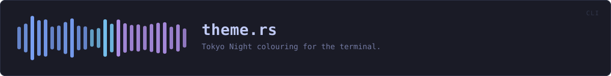

crates/veilvoice-cli/src/theme.rs
veilvoice-cli · 135 lines · read the source
Tokyo Night colouring for the terminal.
The same palette the GUI uses, so the two halves of VeilVoice look like one program. Colour is suppressed when the output is not a terminal, when NO_COLOR is set (the widely-honoured convention), or when TERM=dumb, so piping to a file or a log never produces escape-code soup.
Why a command-line tool has a palette at all
Because the two front-ends are one program. Somebody who uses the desktop application and then runs the binary over SSH should recognise what they are looking at, and the colours carry meaning consistently in both: green for a result, amber for a caveat, red for a refusal, muted for the scope notes that qualify a claim.
Colour is suppressed rather than assumed
Three independent conditions turn it off, and all three are checked: output that is not a terminal, NO_COLOR set to anything at all (the widely-honoured convention), and TERM=dumb. The check runs once through a [std::sync::OnceLock] rather than per call, because this is used inside loops that print a line per file.
Escape sequences in a log file are worse than no colour: they survive into bug reports, pasted output and issue trackers, where they are noise that obscures the message somebody was trying to show you.
WHAT CALLS WHAT
The functions this file defines, and the calls between them. An edge means the callee's name appears, called, inside the caller's body — a syntactic reading, not a type-resolved one.
The same graph as Mermaid source
%%{init: {"theme":"base","themeVariables":{"background":"#1a1b26","primaryColor":"#1f2335","primaryTextColor":"#c0caf5","primaryBorderColor":"#7aa2f7","secondaryColor":"#16161e","tertiaryColor":"#16161e","lineColor":"#565f89","textColor":"#c0caf5","mainBkg":"#1f2335","nodeBorder":"#7aa2f7","clusterBkg":"#16161e","clusterBorder":"#2f3549","fontFamily":"ui-monospace, SFMono-Regular, Consolas, monospace","fontSize":"14px"}}}%%
flowchart TD
n_enabled["enabled"]
n_paint(["paint<br/>pub"])
n_ok(["ok<br/>pub"])
n_warn(["warn<br/>pub"])
n_err(["err<br/>pub"])
n_heading(["heading<br/>pub"])
n_field(["field<br/>pub"])
n_err --> n_paint
n_field --> n_paint
n_heading --> n_paint
n_ok --> n_paint
n_paint --> n_enabled
n_warn --> n_paintThis site loads no third-party script, so it cannot run Mermaid; the diagram above is the same nodes and edges drawn by the generator instead. GitHub renders the source below directly.
ITEMS
| Item | Line | Documentation |
|---|---|---|
colour pub mod | 40 | Tokyo Night, as 24-bit foreground escape sequences. |
enabled fn | 59 | |
paint pub fn | 73 | Wrap text in colour, or return it unchanged when colour is off. |
ok pub fn | 82 | A success line. |
warn pub fn | 87 | A warning line. |
err pub fn | 92 | An error line. |
heading pub fn | 97 | A section heading. |
field pub fn | 102 | A label: value line with the value highlighted. |